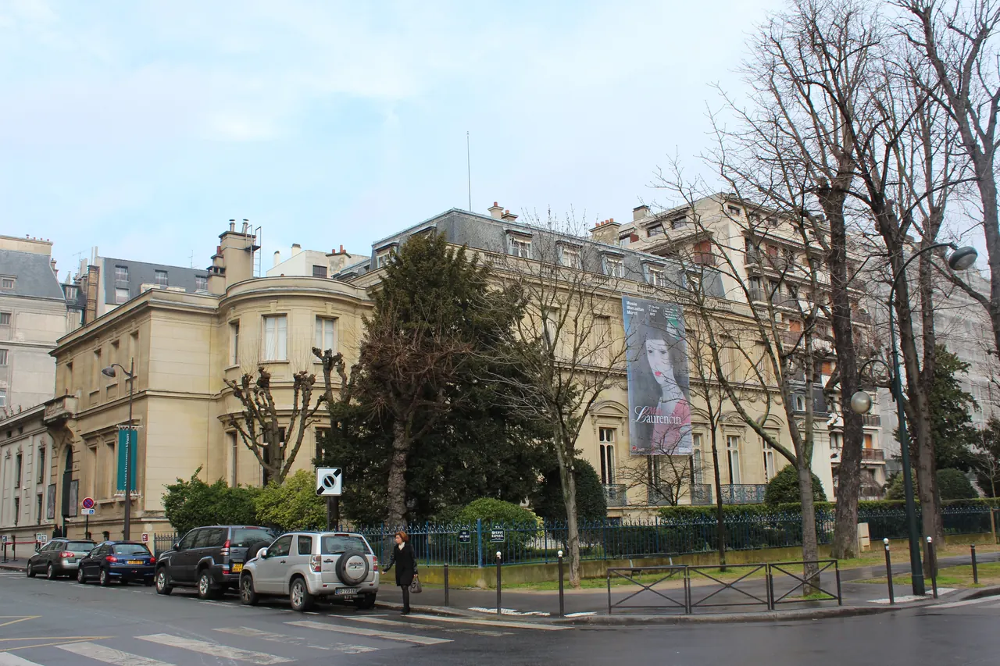
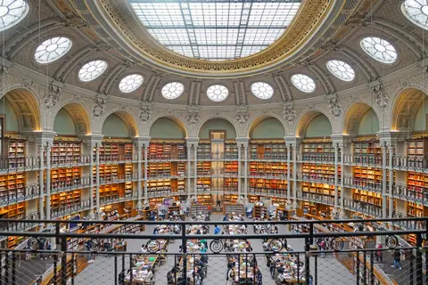
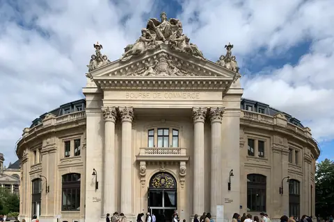
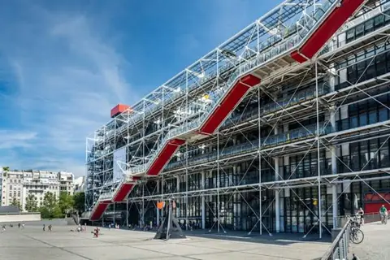
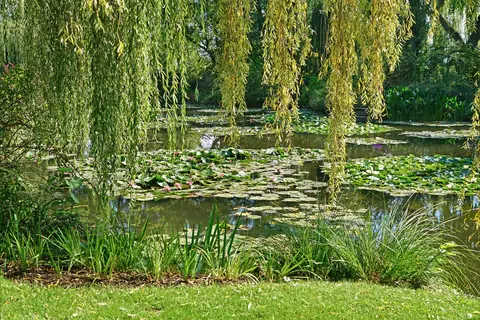
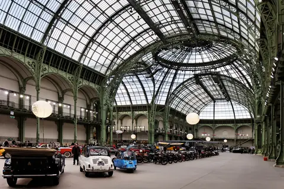
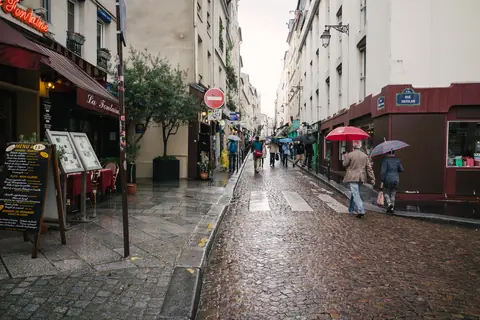

{kind=link}
관광·미술관
Nous avons déjà des billets.
이미 표가 있습니다.
누 자봉 데자 데 비예

파리 서쪽 16구 고급 주거지 라 뮈에트(La Muette) 지구, 불로뉴 숲과 라누라 정원(Jardin du Ranelagh) 옆 한적한 귀족 저택에 자리 잡은 세계에서 가장 많은 클로드 모네 원작 유화를 소장한 미술관이다.
미술사학자 폴 마르모탕(Paul Marmottan)의 나폴레옹 제정 시대 예술품 컬렉션 저택에, 1966년 모네의 둘째 아들 미셸 모네(Michel Monet)가 아버지가 임종 때까지 지베르니 아틀리에에 소장하고 있던 작품 전체를 국가에 기증하면서 모네의 평생에 걸친 작품 100여 점을 보유한 모네의 성지가 되었다.
특히 1874년 제1회 인상파 전시회에 출품되어 '인상주의(Impressionism)'라는 미술사조의 이름을 탄생시킨 불멸의 원작 『인상, 해돋이(Impression, soleil levant, 1872)』와 후기 백내장을 앓으며 그린 강렬한 추상적 지베르니 수련 및 일본 다리 연작이 지하 특별 갤러리에 전시되어 있다.
"오르세나 오랑주리의 거대한 인상파 인파를 벗어나, 한적한 저택 지하 갤러리에서 모네의 『인상, 해돋이』 실물과 지베르니의 거대한 붓 터치를 아주 가까이서 고요하게 마주할 수 있는 모네 애호가들의 보석 같은 공간이다." 지베르니 당일치기를 가지 못하거나 모네의 진품을 더 깊이 보고 싶을 때 60~75분간 관람하기에 완벽하다.
| 휴무 | 월요일 휴관 (5/1·12/25·1/1 휴관) |
|---|---|
| 메모 | place-facts 등재만 — 값은 S2 조사 대상 재확인 |
| 항목 | 상세 정보 |
|---|---|
| 위치 | 2 Rue Louis-Boilly, 75016 Paris |
| 운영 시간 | 화요일–일요일 10:00–18:00 (목요일 야간 21:00까지 연장 개방) / 매주 월요일 휴관 |
| 입장료 | 일반 성인 €14.00, 25세 미만 학생 €9.00, 7세 미만 무료 (현장 또는 공식 온라인 예매) |
| 교통 접근 | 메트로 9호선 La Muette역 도보 7분, RER C선 Boulainvilliers역 도보 9분 |
| 주변 환경 | 미술관 바로 옆에 아름다운 라누라 정원(Jardin du Ranelagh)이 있어 관람 후 벤치 휴식 완벽 |
Nous avons déjà des billets.
이미 표가 있습니다.
누 자봉 데자 데 비예
On peut prendre des photos ?
사진 찍어도 되나요?
옹 푀 프랑드르 데 포토
Où commence la visite ?
관람은 어디서 시작하나요?
우 코망스 라 비지트

1868년 앙리 라브루스트가 주철 기둥과 9개 도자기 돔으로 완성한 19세기 건축의 걸작 '라브루스트 열람실'과 일반에 전면 무료 개방된 거대한 타원형 '오발 열람실(Salle Ovale)', 프랑스 국립도서관 박물관.

18세기 원형 곡물거래소를 세계적인 건축가 안도 다다오가 노출 콘크리트 원통 실린더로 리노베이션한 현대미술관. 프랑수아 피노 회장의 세계적 현대미술 컬렉션과 1889년 돔 천장 무역 파노라마 프레스코화.

렌조 피아노와 리처드 로저스가 건물 배관과 골격을 외벽으로 노출시킨 20세기 하이테크 건축의 전설이자 유럽 최대 근현대미술관. ⚠ 2025년 가을부터 2030년까지 전면 개보수 공사로 본관 폐관 중.

클로드 모네가 43년간 직접 꽃과 연못을 가꾸며 불후의 『수련』 대작을 창조해낸 살아있는 인상파 캔버스. 초록색 일본식 다리가 걸린 '물의 정원(Jardin d'eau)'과 핑크빛 모네 생가 아틀리에.

1900년 파리 만국박람회를 위해 건립된 45m 높이 아르누보 철골 유리 네이브(Nave)의 기념비적 국립 전시장. 2024 파리 올림픽을 거쳐 리노베이션 완료 후 재개관한 파리 문화 예술의 중심지.

중세 소르본 대학 교수와 학생들이 공용어로 라틴어를 쓰던 데서 유래한 800년 파리 지성의 요람이자 센 강 좌안(Rive Gauche)의 심장. 프랑스 위인들의 성소 팡테옹(Panthéon), 셰익스피어 앤 컴퍼니, 뤽상부르 공원.